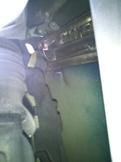
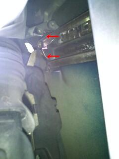
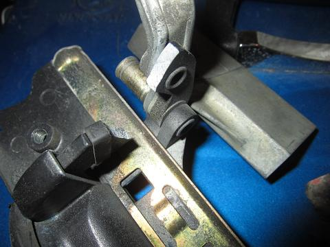

  内張りを外して覗き込んでみる。 すると・・・ 稼動部の鋳物部分が折れていた(--; こんなとこ折れるか？！
|
 ドアノブは前期型が鋳物、後期型はプラスチックに変更されている。 前期型の鋳物のノブは、生産終了になっていて新品では入手できない。 ここだけ後期じゃ変なので、前期の部品取り車を見つけて入手した。 交換は、ゴムパッキンを交換する要領で、ノブのパネルを外すと見えるトルクスボルト２本と、 内側からワイヤーを外せばノブassyが取り出せる。 取り付けはその反対の行程を行う。 前だとキーシリンダーもあるし、、今回は後ろのノブだったのでまだ良かった。
|